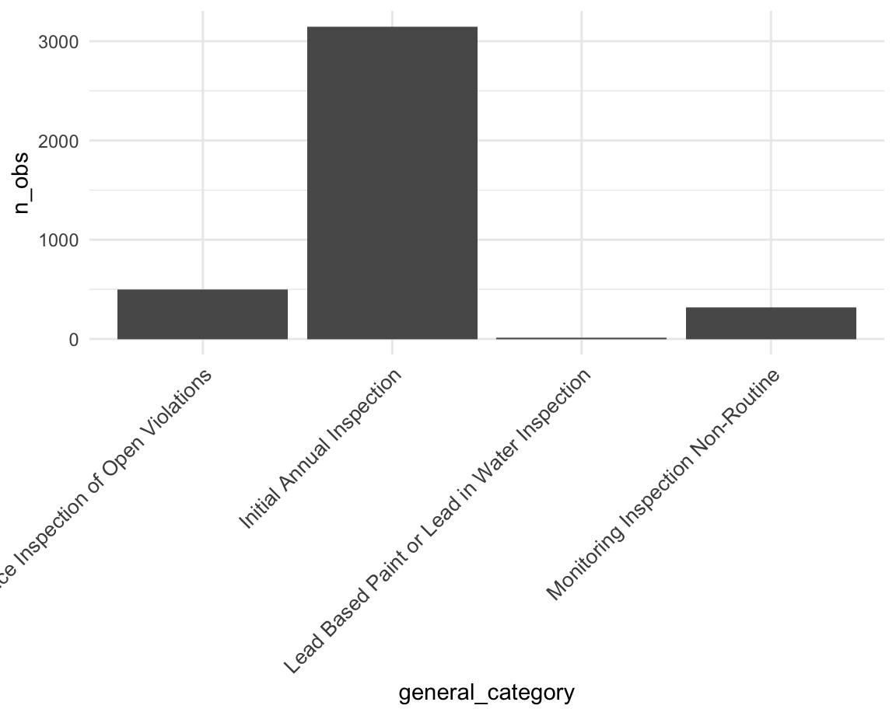
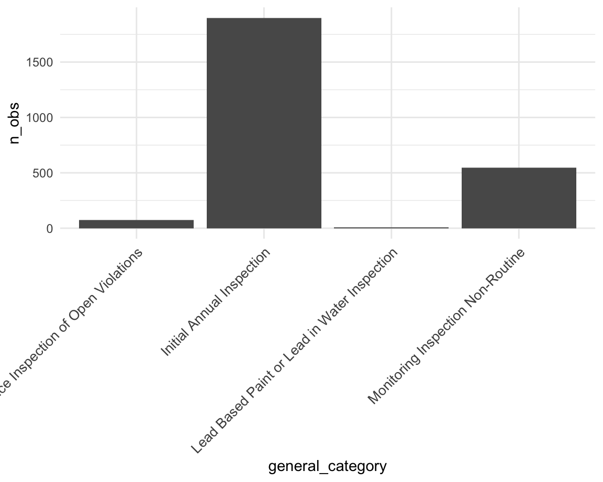
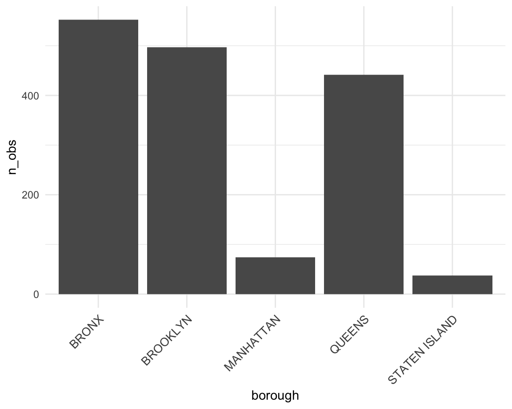
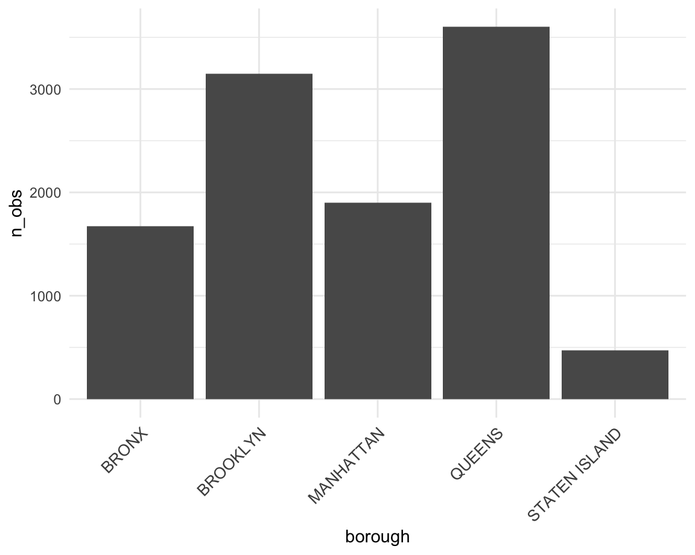
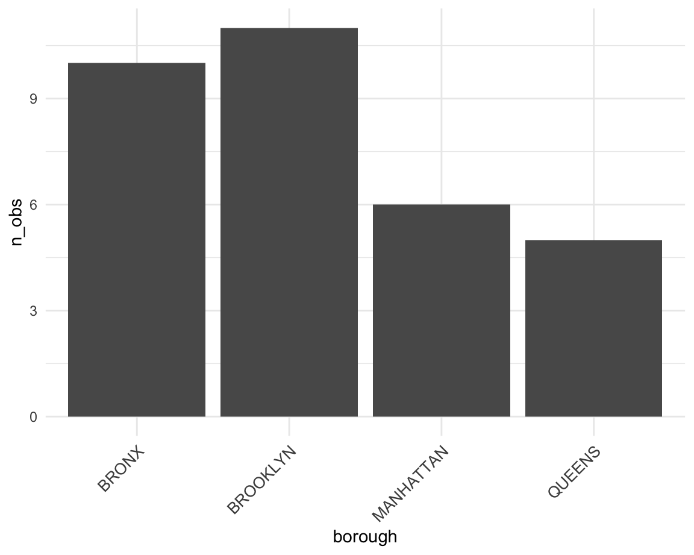
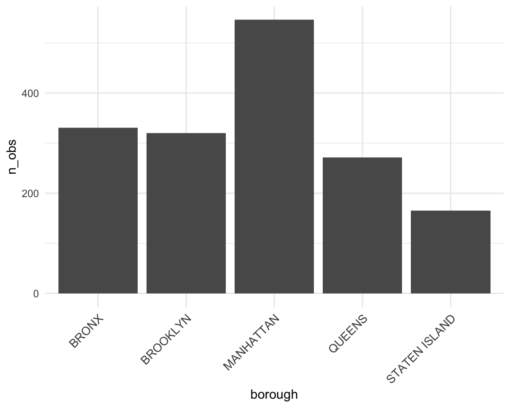

raw_data<-read_csv(file="./data/DOHMH_Childcare_Center_Inspections .csv")## Warning: One or more parsing issues, see `problems()` for details## Rows: 26397 Columns: 34
## ── Column specification ────────────────────────────────────────────────────────
## Delimiter: ","
## chr (23): Center Name, Legal Name, Building, Street, Borough, Phone, Permit ...
## dbl (11): ZipCode, Maximum Capacity, Building Identification Number, Violati...
##
## ℹ Use `spec()` to retrieve the full column specification for this data.
## ℹ Specify the column types or set `show_col_types = FALSE` to quiet this message.Childcare_center<-
raw_data%>%
janitor::clean_names() %>%
filter(status=="Permitted")%>%
select(-legal_name,-building,-street,-phone,-permit_number,-permit_expiration,
-day_care_id,-url,-date_permitted,-actual)%>%
drop_na(violation_rate_percent)%>%
drop_na(public_health_hazard_violation_rate)
borough_inspec_summmary<-
Childcare_center%>%
select(borough,inspection_summary_result)%>%
drop_na(inspection_summary_result)%>%
group_by(borough,inspection_summary_result)%>%
summarise(
n_obs=n()
)%>%
mutate(
general_category=case_when(
inspection_summary_result %like% "^Compliance Inspection of Open Violations" ~"Compliance Inspection of Open Violations",
inspection_summary_result %like% "^Initial Annual Inspection" ~"Initial Annual Inspection",
inspection_summary_result %like% "^Lead Based Paint or Lead in Water Inspection" ~"Lead Based Paint or Lead in Water Inspection",
inspection_summary_result %like% "^Monitoring Inspection Non-Routine" ~"Monitoring Inspection Non-Routine")
)## `summarise()` has grouped output by 'borough'. You can override using the
## `.groups` argument.borough_inspec_general_sumary<-
borough_inspec_summmary%>%
group_by(borough,general_category)%>%
summarise(
n_obs=sum(n_obs)
)## `summarise()` has grouped output by 'borough'. You can override using the
## `.groups` argument.inspec_general_borough_sumary<-
borough_inspec_summmary%>%
group_by(general_category,borough)%>%
summarise(
n_obs=sum(n_obs)
)## `summarise()` has grouped output by 'general_category'. You can override using
## the `.groups` argument.the plots below is detailed information to explore the relationship between borough and inspections (maybe for Shiny????)
borough_inspec_general_sumary_plot_BRONX<-
borough_inspec_general_sumary%>%
filter(borough=="BRONX")%>%
ggplot(aes(x=general_category,y=n_obs))+
geom_bar(stat = "identity")+
theme(axis.text.x = element_text(size=10, angle=45, hjust = 1))
borough_inspec_general_sumary_plot_BRONXborough_inspec_general_sumary_plot_BROOKLYN<-
borough_inspec_general_sumary%>%
filter(borough=="BROOKLYN")%>%
ggplot(aes(x=general_category,y=n_obs))+
geom_bar(stat = "identity")+
theme(axis.text.x = element_text(size=10, angle=45, hjust = 1))
borough_inspec_general_sumary_plot_BROOKLYN
borough_inspec_general_sumary_plot_MANHATTAN<-
borough_inspec_general_sumary%>%
filter(borough=="MANHATTAN")%>%
ggplot(aes(x=general_category,y=n_obs))+
geom_bar(stat = "identity")+
theme(axis.text.x = element_text(size=10, angle=45, hjust = 1))
borough_inspec_general_sumary_plot_MANHATTAN
borough_inspec_general_sumary_plot_QUEENS<-
borough_inspec_general_sumary%>%
filter(borough=="QUEENS")%>%
ggplot(aes(x=general_category,y=n_obs))+
geom_bar(stat = "identity")+
theme(axis.text.x = element_text(size=10, angle=45, hjust = 1))
borough_inspec_general_sumary_plot_QUEENSborough_inspec_general_sumary_plot_STATENISLAND<-
borough_inspec_general_sumary%>%
filter(borough=="STATEN ISLAND")%>%
ggplot(aes(x=general_category,y=n_obs))+
geom_bar(stat = "identity")+
theme(axis.text.x = element_text(size=10, angle=45, hjust = 1))
borough_inspec_general_sumary_plot_STATENISLANDOpen_violation_borough_sumary<-
inspec_general_borough_sumary%>%
filter(general_category=="Compliance Inspection of Open Violations")%>%
ggplot(aes(x=borough,y=n_obs))+
geom_bar(stat = "identity")+
theme(axis.text.x = element_text(size=10, angle=45, hjust = 1))
Open_violation_borough_sumary
Intial_Annual_violation_borough_sumary<-
inspec_general_borough_sumary%>%
filter(general_category=="Initial Annual Inspection")%>%
ggplot(aes(x=borough,y=n_obs))+
geom_bar(stat = "identity")+
theme(axis.text.x = element_text(size=10, angle=45, hjust = 1))
Intial_Annual_violation_borough_sumary
Lead_violation_borough_sumary<-
inspec_general_borough_sumary%>%
filter(general_category=="Lead Based Paint or Lead in Water Inspection")%>%
ggplot(aes(x=borough,y=n_obs))+
geom_bar(stat = "identity")+
theme(axis.text.x = element_text(size=10, angle=45, hjust = 1))
Lead_violation_borough_sumary
Non_Routine_violation_borough_sumary<-
inspec_general_borough_sumary%>%
filter(general_category=="Monitoring Inspection Non-Routine")%>%
ggplot(aes(x=borough,y=n_obs))+
geom_bar(stat = "identity")+
theme(axis.text.x = element_text(size=10, angle=45, hjust = 1))
Non_Routine_violation_borough_sumary
clean = Childcare_center %>%
mutate(borough = as.factor(borough), program_type = as.factor(program_type)) %>%
group_by(borough, program_type) %>%
count(violation_category)
fit = lm(n~ borough + program_type, data = clean)
anova(fit) %>%
knitr::kable(caption = "Two way anova of violation frequency and month")| Df | Sum Sq | Mean Sq | F value | Pr(>F) | |
|---|---|---|---|---|---|
| borough | 4 | 1490046 | 372511.5 | 2.491327 | 0.0614192 |
| program_type | 3 | 2854973 | 951657.6 | 6.364609 | 0.0015294 |
| Residuals | 34 | 5083794 | 149523.3 | NA | NA |